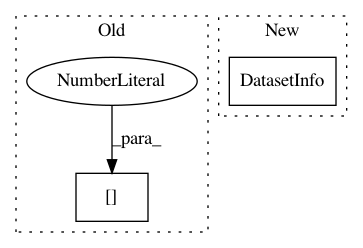

5b470f8f8c0146591b42462c6b30e85a2117261f,ilastik/applets/dataSelection/dataSelectionGui.py,DataSelectionGui,_createDatasetInfo,#DataSelectionGui#Any#Any#Any#,549
Before Change
h5Exts = [".ilp", ".h5", ".hdf5"]
n5Exts = [".n5"]
if os.path.splitext(datasetInfo.filePath)[1] in h5Exts + n5Exts:
if os.path.splitext(datasetInfo.filePath)[1] in n5Exts:
datasetNames = self.getPossibleN5InternalPaths( absPath )
else:
After Change
else:
raise DataSelectionGui.UserCancelledError()
return DatasetInfo(
filepath=data_path,
cwd=cwd,
allowLabels=(self.guiMode == GuiMode.Normal),
subvolume_roi=roi)
def _configureOpWithInfos(self, roleIndex, startingLane, endingLane, infos):
Attempt to configure the specified role and lanes of the
In pattern: SUPERPATTERN
Frequency: 3
Non-data size: 2
Instances
Project Name: ilastik/ilastik
Commit Name: 5b470f8f8c0146591b42462c6b30e85a2117261f
Time: 2019-06-17
Author: tomaz.vieira@embl.de
File Name: ilastik/applets/dataSelection/dataSelectionGui.py
Class Name: DataSelectionGui
Method Name: _createDatasetInfo
Project Name: ilastik/ilastik
Commit Name: 54752cfa38468abbab5580fae1a718bb41fe3f31
Time: 2013-04-19
Author: bergs@janelia.hhmi.org
File Name: ilastik/applets/dataSelection/dataSelectionGui.py
Class Name: DataSelectionGui
Method Name: handleAddStack
Project Name: ilastik/ilastik
Commit Name: e0805051d27d136cae1469ed73fefc6c7e8cda4d
Time: 2015-08-25
Author: bergs@janelia.hhmi.org
File Name: ilastik/applets/dataSelection/dataSelectionGui.py
Class Name: DataSelectionGui
Method Name: addStack